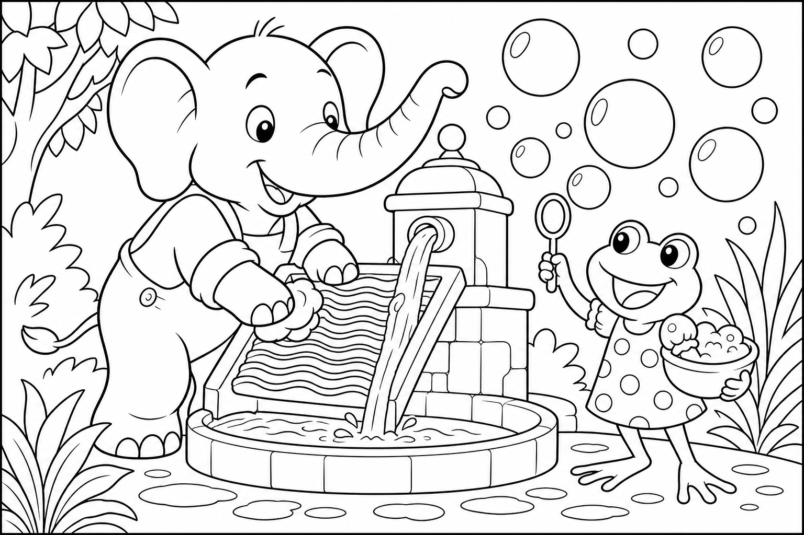

Cerca questa immagine in fondo al libro per colorarla come preferisci. Ricorda: le bolle di sapone iridescenti e la schiuma sul ciuffo.
C'era una volta un Elefante di nome Franco, che gli amici chiamavano ... EleFranco. Di cognome faceva Franchini. Abitava nella sua accogliente casa nel paesino di FrancaVilla, un borgo con un lavatoio comune di pietra grigia, dove l'acqua corrente cantava tra i vasche, le tovaglie stese sventolavano come vele piccole e l'aria sapeva di sapone di Marsiglia e bucato al sole.
Era un mattino luminoso e EleFranco aveva una commissione profumata: «Devo andare al mercato del lavatoio a comprare una saponetta di Marsiglia! Le tovaglie della Festa devono profumare di pulito.» Controllò il canestro: vuoto, pronto per riempirsi di profumo e di risate. Si calzò i suoi stivali giganti da fioraio, blu e con la suola a pois bianchi, prese un canestro e uscì di casa.
I ciottoli bagnati tremavano piano: THUMP THUMP THUMP Al lavatoio, una rana verde brillante saltava disperata tra le vasche. Era Rina la Rana, vivace e rumorosa, ma quella mattina era rossa in viso per lo sforzo. «EleFranco, che disastro!» gracchiò. «Ho fatto troppo schiuma per le tovaglie della Festa e ora il pavimento è un patino!
Gli amici cadono uno dopo l'altro con le gabbie del bucato!» EleFranco posò il canestro e guardò le bolle che galleggiavano ovunque. «Non ti preoccupare, Rina. Raccolgo le bolle e liberiamo la strada.»
Ma mentre aspirava le bolle con la proboscide, la mente cominciò a vagare: pensò alla saponetta quadrata, al profumo di olivo, a quante tovaglie piegare per la Festa. Stava quasi per perdere l'equilibrio quando un'anatra urlò: «Attento, EleFranco!» Allora l'elefante scosse le grandi orecchie e disse ad alta voce la sua parola magica: "FOCUS!"«Piano, Rina. Le bolle volano, noi no.»
Raccolse un mucchio di schiuma, ma il pavimento era scivoloso come vetro: un passo, due passi — SPLASH! — finì seduto in mezzo alle tovaglie bagnate, con le bolle che gli coprivano il ciuffo come un cappello di spuma. «Ops,» disse EleFranco. «Ora sembro un dolce alla panna montata.» Invece di piangere, Rina scoppiò a ridere.
Poi ridde l'anatra. Poi tutti al lavatoio. Il coraggio di ridere del proprio slittamento sciolse la paura, e ognuno aiutò l'altro ad alzarsi. Le bolle rimaste, sollevate dal vento, si posarono sulla facciata del mercato e riflessero un arcobaleno perfetto.
La saponiera uscì con una saponetta profumata e un pacco di tovaglie già stirate: «Per chi lava il paese con il sorriso.» Rina pulì il pavimento con un ramo di salvia; l'anatra passò le tovaglie bagnate di EleFranco al filo più alto, dove il vento le avrebbe asciugate in un battito di ali. Perfino le bolle residue danzavano come palloncini trasparenti sopra la vasca, senza far cadere nessuno. «Ridere insieme,» disse Rina, «è il sapone più forte che conosco.»
EleFranco annuì, ancora seduto nella pozza di schiuma: «Allora oggi facciamo il bucato del coraggio — e profuma di Festa.» La missione era compiuta senza nemmeno aprire il portafoglio: il sapone era lì, profumato e gratis, e il lavatoio era di nuovo sicuro.
EleFranco capì allora la morale di quella giornata: Ridere insieme del proprio slittamento è coraggio. 🫧
EleFranco scosse la schiuma dal ciuffo, aiutò a piegare l'ultima tovaglia e scoppiò nella sua famosa risata: OH... OH... OH...